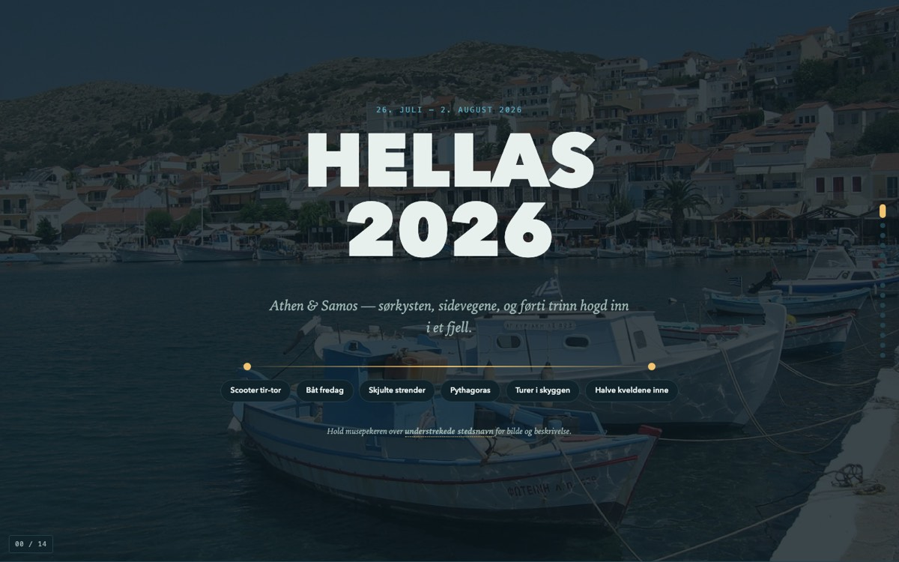

Hellas 2026
Juli 2026
Dag-for-dag-plan for en uke på Samos og i Athen. Interaktivt kart med alle stedene fargelagt etter dag, flere alternativer per dag, og stedsnavn du kan holde over for bilde og detaljer. Bygget rundt det som faktisk styrer dagene der nede: varmen, meltemien, og hvilke severdigheter som er stengt på tirsdager.